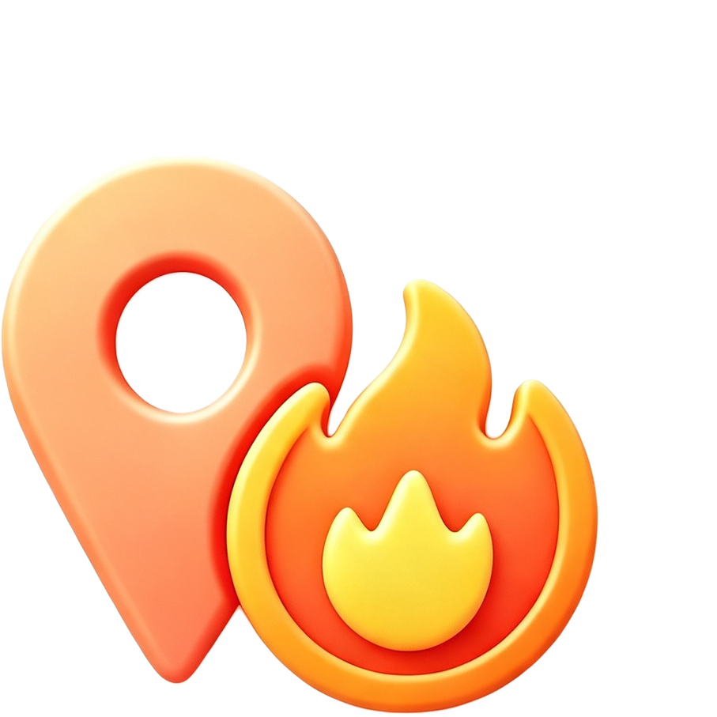
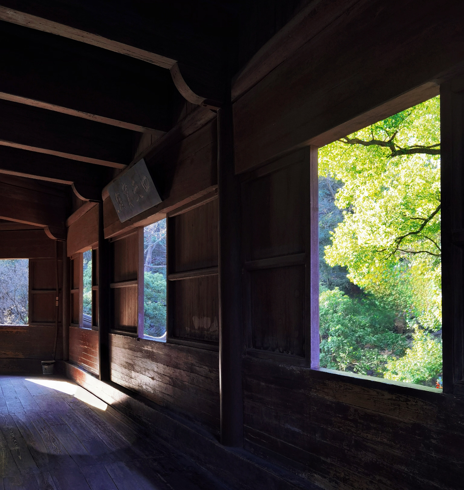

浙江杭州
搜索
今日好拍

热门机位
找个搭子
路线盲盒
拍照指南
机子推荐
附近速达
本周热门
西湖风景区
64378人去过
六和塔
17642人推荐
中山北路
26473人去过
小众好地
GO→
发掘冷门宝藏机位
17642人推荐
街巷漫游
GO→
老城街巷 Citywalk
17642人推荐
推荐
关注
附近
全部
热门
人像
建筑
街拍
风光
落日
氛围感
除了西湖，会带每个来杭州的朋友来这citywalk
城市漫游者
267

杭州六和塔有什么魔力，怎么一来就出片
逆光手记
176
周末想远离城市喧嚣，就来这里走走吧
落日收藏家
447
上海外滩必拍的五个机位！附上定位
黑白印花社
159
逛西湖想拍出神图，就看这篇机位
窗边摄影师
238
中山北路这条街就有这么好逛吗？
街角取景器
312
来西湖不要错过这个机位，世界第一忧郁诞生
胶片小夏
755
建议码住这个路线，不管怎么拍都出片
闪光灯练习生
521
所有分类
热门
人像
建筑
街拍
风光
落日
氛围感
城市夜景
蓝调时刻
日出
老街
市集
情侣装
打卡
航拍
天台
烟火气
雪景
演唱会
网红墙
9:00
9:00
推荐
关注
附近
全部
热门
人像
建筑
街拍
风光
落日
氛围感
广场
地图
99+
消息
我的